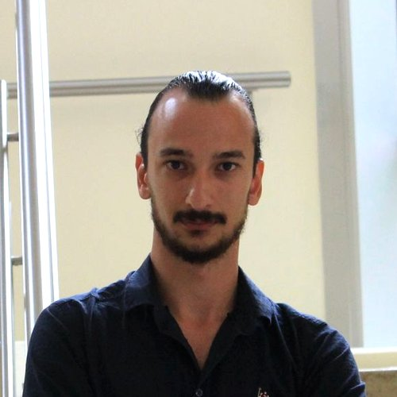

Samet Apaydın
Postdoctoral Researcher · Sabancı University
I am a Postdoctoral Researcher in Political Science at Sabancı University. I study how states govern migration and what follows from it at home and abroad: how migration policies affect host communities and electoral behavior, and how migration diplomacy structures relations among origin, transit, and destination countries, with a particular focus on Türkiye. Although I work primarily with spatial and administrative data, my work also draws on surveys and qualitative methods.
I received my Ph.D. from Sabancı University in 2025 and was a Visiting Ph.D. Researcher at the University of Glasgow. My job market paper uses a dispersal policy in Türkiye to show how immigration affects local housing markets and voting. I have contributed to several Horizon Europe research consortia on migration, including GAPs, MirreM, and MAGYC.
Education
-
Ph.D. in Political ScienceSabancı University, Istanbul2020 – 2025
-
Visiting Ph.D. ResearcherUniversity of Glasgow, Scotland2024 – 2025
-
M.A. in Political ScienceSabancı University, Istanbul2018 – 2020
-
B.A. in Political Science and International RelationsMarmara University, Istanbul2013 – 2018
Academic Positions
-
Postdoctoral ResearcherSabancı UniversitySeptember 2025 – Present
-
Research AssistantUniversity of GlasgowApril 2024 – March 2025
-
Research AssistantSabancı UniversityJuly 2019 – August 2025